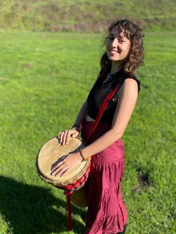
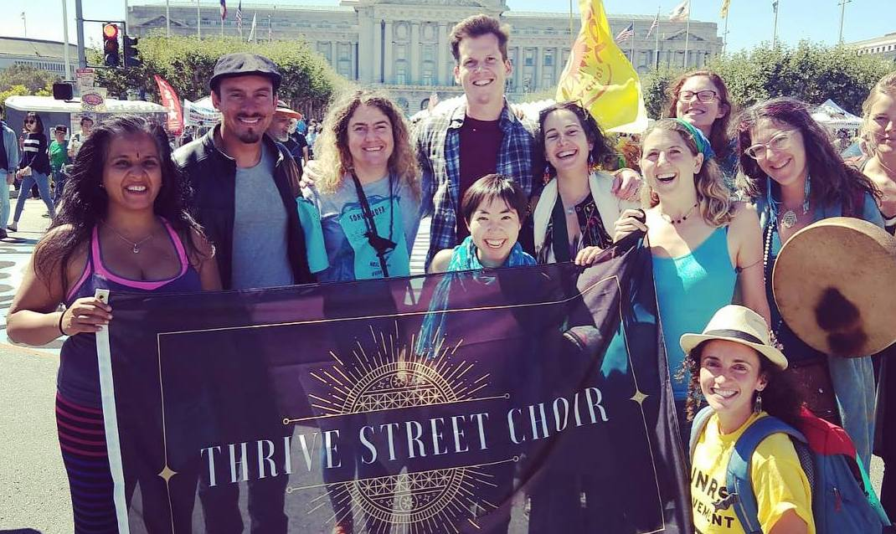

I offer 1-1 coaching that I lovingly call serving as a “drum doula.” I work with clients who feel called to build their relationship with drumming- primarily hand drums. We aim to work together for 6 months, which is a length of time allowing for deep unfolding of the coaching process and sufficient time to meet many of your goals around drumming. We meet every two, 3, or 4 weeks. Things to work on include: research into different drum lineages and figuring out which one to start with becoming observant of rhythm, and applying nature awareness skills getting into a "rhythm" of playing and practicing - both alone, and with others confidence in drumming, making noise, and how this translates to other parts of your life!
She Drums is an in-process documentary film project. She Drums is a journey through rhythm, voice, culture, and exploring the destinies of female drummers. Enjoy interviews and percussion footage of over 30 female drummers from a variety of cultural backgrounds living in or with connection to the San Francisco Bay Area.
I co-founded the Thrive Street Choir and can consult for you on how to create a similar effort in your geography, partnering with local social justice organizations to bring potent music to the movements!
